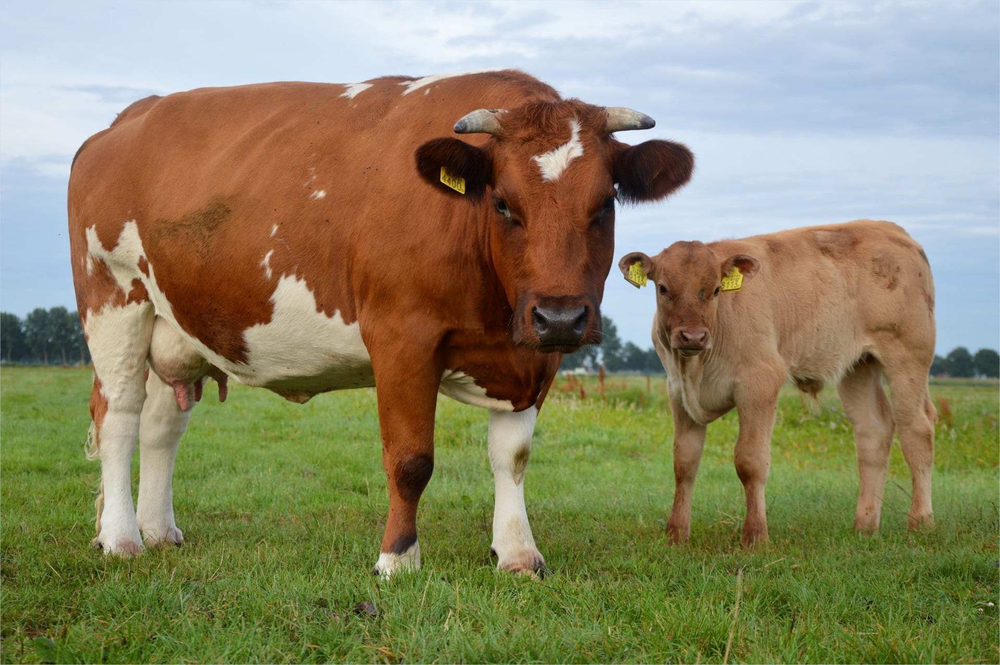

Nötkreatur (Bos taurus), också kallade nöt, nötdjur, nötboskap, kor (eller vardagligt kossor),
är domesticerade klövdjur av familjen oxdjur, det vill säga vanliga kor, tjurar, kvigor och kalvar.
Dessa tamdjur används mest för mjölk- och köttproduktion, och som dragdjur.

Links